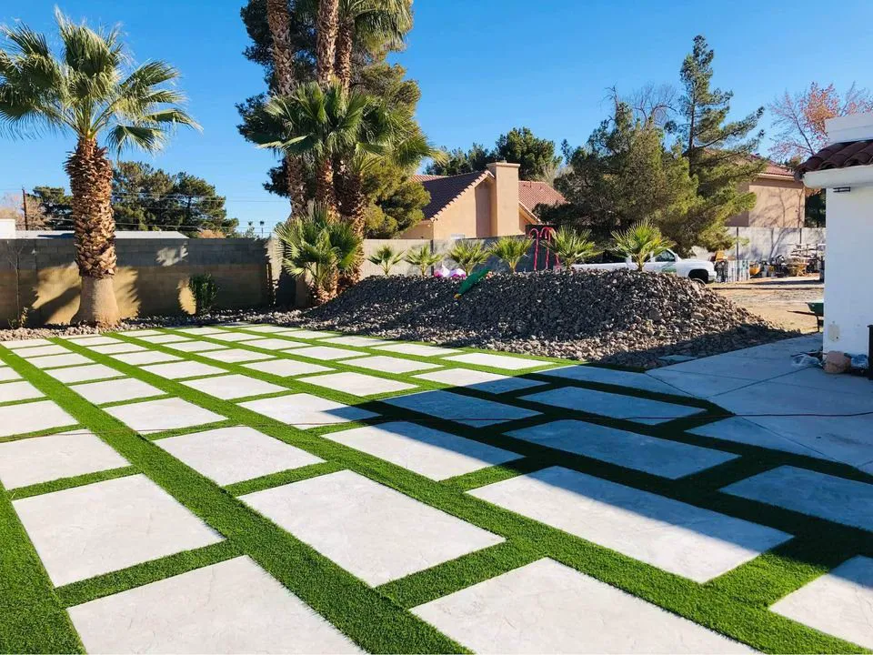
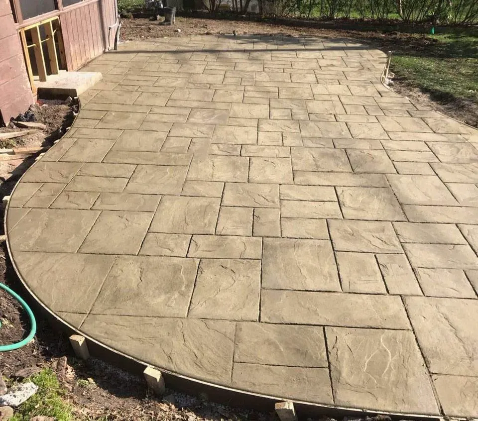
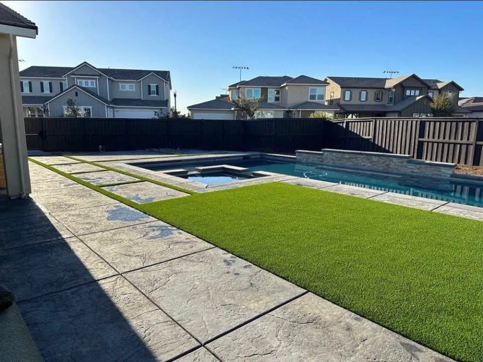
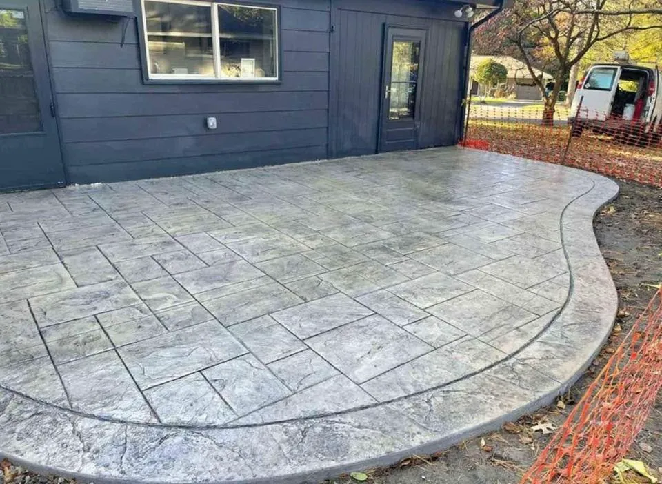
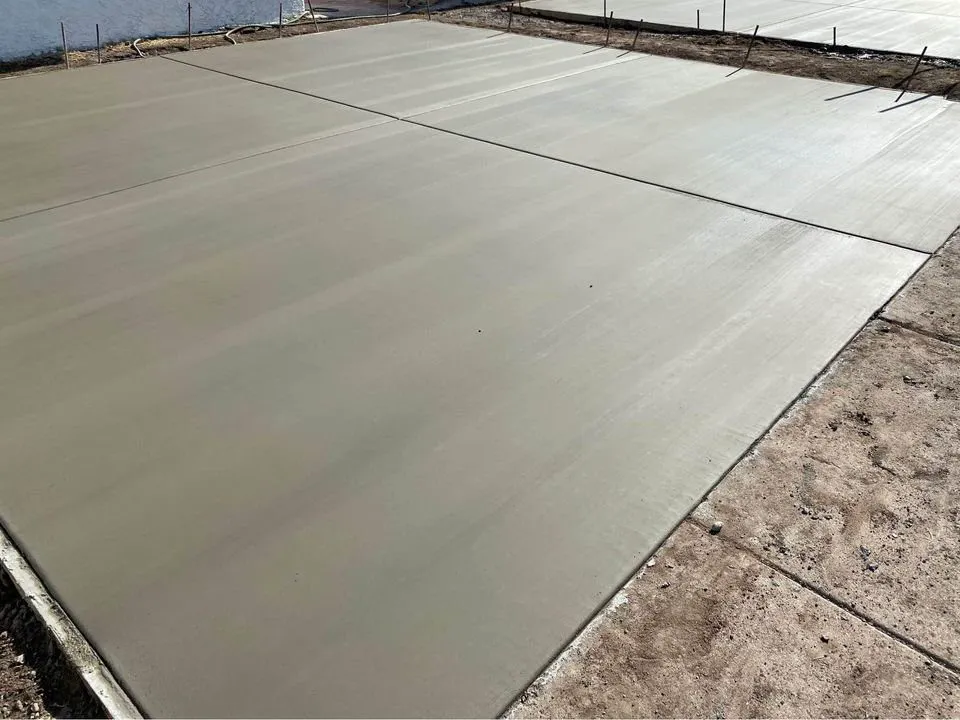
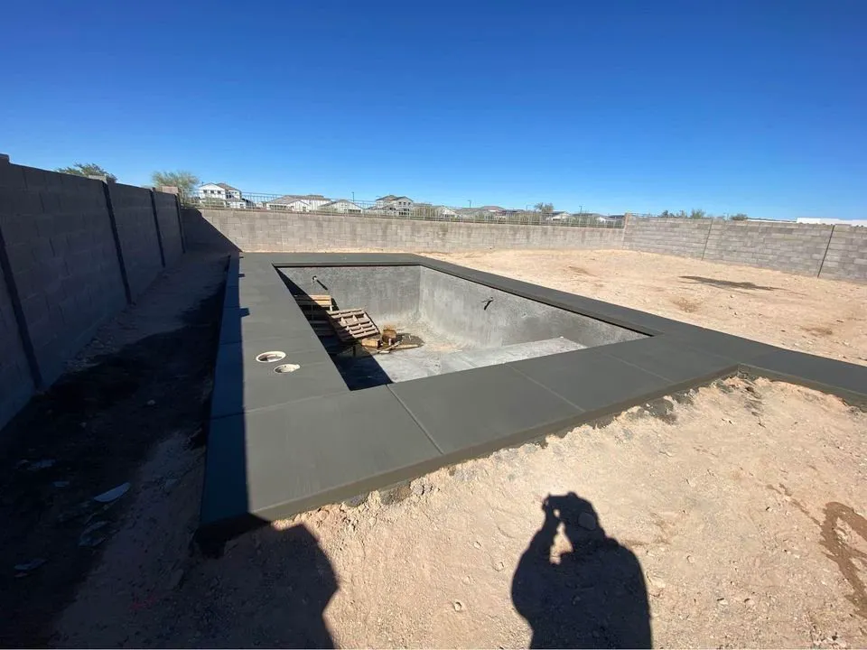

Concrete doesn't do second chances.
Mesa Master Concrete pours driveways, patios, pool decks and slabs across Mesa and the East Valley. Done right, the first time.
A truck of concrete gives you about ninety minutes.
Then it starts to set. No undo. No second pour.
Skip the prep, add a little water, rush the finish, and you'll see it in the cracks for years.
This is not a weekend project.


The rushed driveway
Water on the base, a hose in the form.
A wet, loose base settles. The slab on top of it follows.
Soupy mix, poured fast.
Extra water makes concrete easy to place and much weaker once it cures.
Then the cracks show up.
No steel, no planned joints, so the slab picks its own places to break.
And then comes the teardown bill.
Breaking out and re-pouring costs more than doing it right once.

Same driveway. Which crew do you want?


The right way
Same job. Done by pros.
- Compacted gravel base, graded to drain
- Rebar on chairs, so steel sits where it belongs
- Mix ordered for the job. No water added on site
- Placed, screeded and floated on schedule
- Joints cut and the slab cured, not left to chance
Poured right. On schedule.
- Licensed and insured
- Free in-person estimates
- 5.0 stars on Google (21 reviews)
- Residential and commercial
What we pour.
Residential and commercial. Pick one to see how we do it.
Concrete Driveways
Stamped, plain slab, exposed aggregate, and concrete with artificial turf.
See how we do itConcrete Patios
Stamped, slab, stained and colored patios, plus concrete and artificial grass.
See how we do itConcrete Pool Decks
Stamped, finished, travertine style and Kool Deck pool decks, new and repair.
See how we do itCommercial Concrete
Foundations, parking lots, flooring and restoration for businesses.
See how we do itConcrete Slabs & Foundations
Slabs, house and garage footers and foundations, stem walls and commercial footers.
See how we do itConcrete Sidewalks
Durable, safe sidewalks and walkways that blend with your landscape.
See how we do itConcrete Curbing
Garden and regular curbing: seamless borders for beds and driveways.
See how we do itConcrete Repair
Cracks, spalling and unevenness, repaired.
See how we do itNot sure which one you need?
Our work.
A few recent pours. Ask us for more near you.






How we keep it honest.
Concrete is hard to judge until it's too late to change. So we put the important parts in front of you early.
-
A free, in-person estimate.
One of our team visits your property, talks through the project and gives you an accurate estimate.
-
Licensed and insured.
We hold the license and insurance to handle residential and commercial concrete projects.
-
Residential and commercial.
Driveways, patios and pool decks for homes. Foundations, parking lots and floors for businesses.
-
Serving the East Valley.
Mesa, Gilbert, Chandler, Tempe, Scottsdale and Apache Junction.
Concrete across the East Valley.
Mesa Master Concrete is a concrete contractor in Mesa, Arizona, working on driveways, patios, pool decks, slabs and foundations for homes and commercial properties.
Call or send the form and we will set up a free, in-person estimate at your property.
- Coverage
- Licensed and insured
- Service area
- Mesa and the East Valley
- Estimates
- Free, in person
Where we work.
Serving Mesa and the East Valley and the towns around it.
- Mesa
- Gilbert
- Chandler
- Tempe
- Scottsdale
- Apache Junction
Not on the list? Call. We service the East Valley and will tell you straight whether we can take the job.
Call (602) 932-2994What customers say.
Hover a bubble to read it.Tap a bubble to read it.
5.0 average from 21 reviews. Read them on Google
They handled our concrete slab installation quickly and efficiently. Very pleased with their work.
I reached out to Mesa Master Concrete to replace some cracked concrete steps at the front of my house. The new steps look great, and the whole job was completed in a single day. I appreciated how respectful they were of my property, and the quality of the work was excellent.
They replaced our old concrete steps, and the new ones are perfect. Great work from start to finish.
Booking is simple.
-
Call or send the form
Tell us what you want poured and where.
-
We visit the property
A free, in-person estimate. We talk through the project.
-
You get an estimate
We provide an accurate estimate for the job.
-
We build it
Prep, pour, finish and cure. Then we walk it with you.
Questions we hear a lot.
Do you offer free estimates?
Yes. One of our team visits your property to discuss the project and gives you an estimate, free.
Which cities do you serve?
Mesa and the East Valley, including Gilbert, Chandler, Tempe, Scottsdale and Apache Junction.
Do you do commercial work?
Yes. Commercial foundations and footers, parking lots, flooring and restoration, as well as residential work.
Can you combine concrete with artificial turf?
Yes. We build concrete and artificial turf driveways and patios, from geometric squares to a grass strip.
Can you pour in the Arizona summer?
Yes, with a plan. Heat makes concrete set faster, so crews schedule around the heat and protect the surface while it cures. Ask us how we would handle your job.
How long until I can walk or drive on it?
Most slabs take foot traffic after a day or two. Concrete keeps gaining strength for about 28 days, so we will give you guidance for your job.
Ready when you are.
Call us, or send the details and we will call you to set up a free in-person estimate.